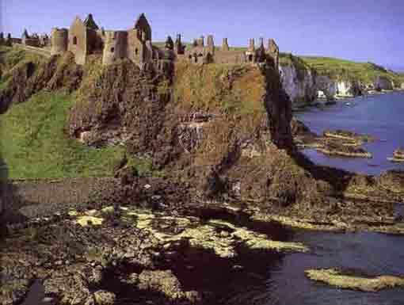

Замок Донлук (Dunluce Castle) графство Антрим
Расположенный к северо-западу от городка Bushmills,
знаменитого своей винокурней, производящей виски, замок Донлук расположен на
самом краю вершины утеса, возвышаюшемся над морем. Это неприступное место
возвышающе главенствует над просторами земель, которыми владела династия
Macquillan вплоть до XVII столетия. После чего земли и прибрежные воды перешли
во владение династии McDonnells. Замок был построен на месте шотландского
сторожевого дома, корни которого берут свои истоки из глубин XIII столетия, и
просуществовавшего до XVII столетия.
